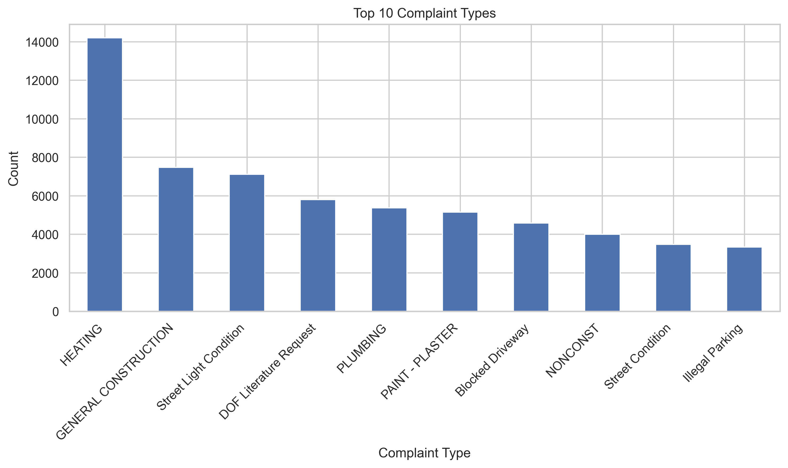
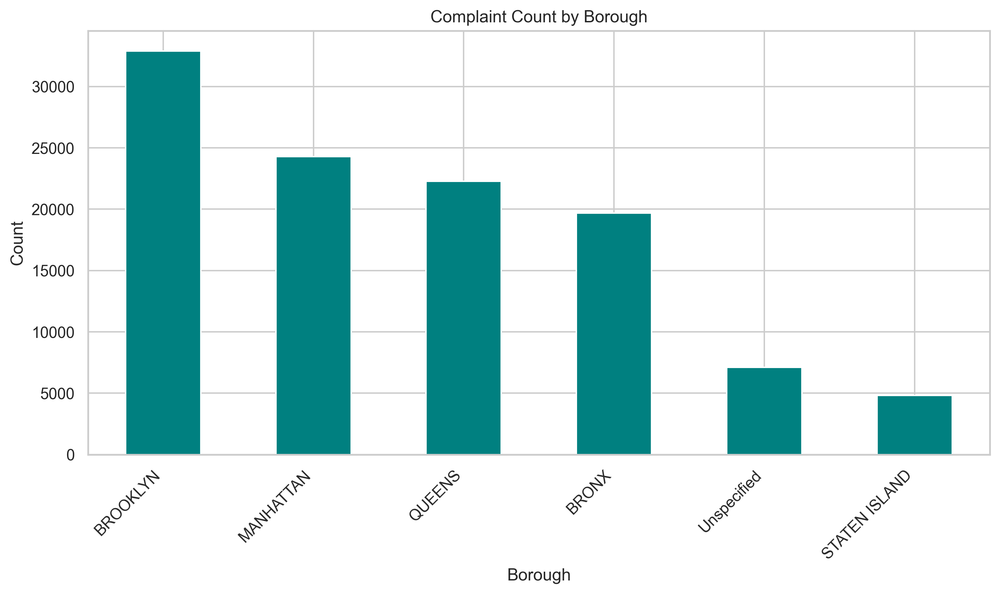
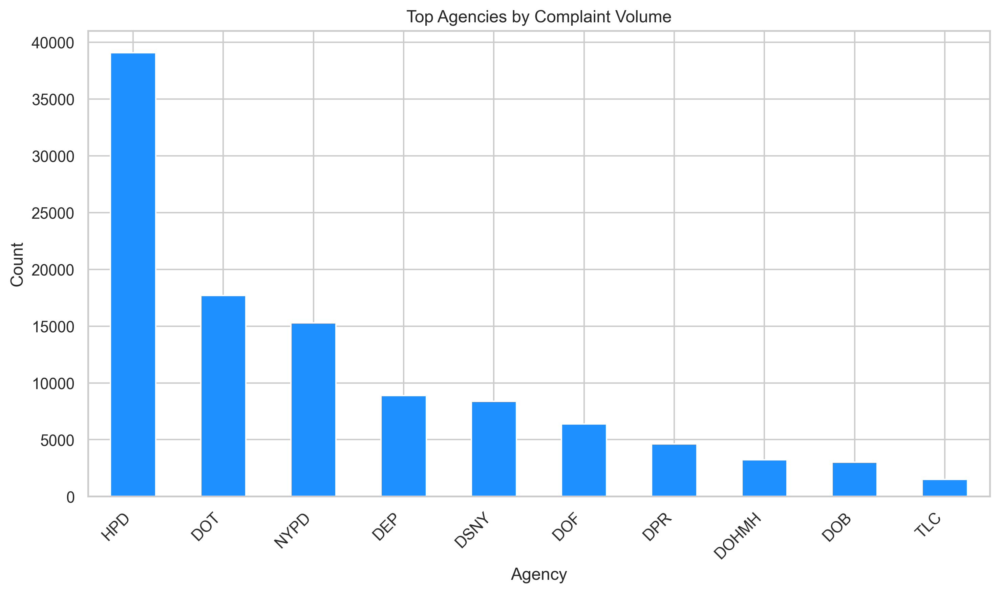
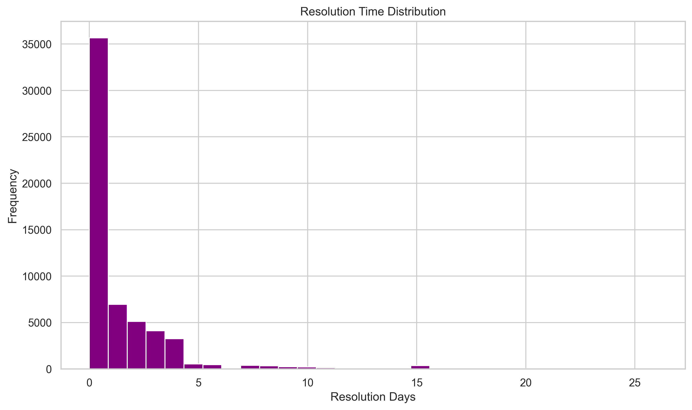
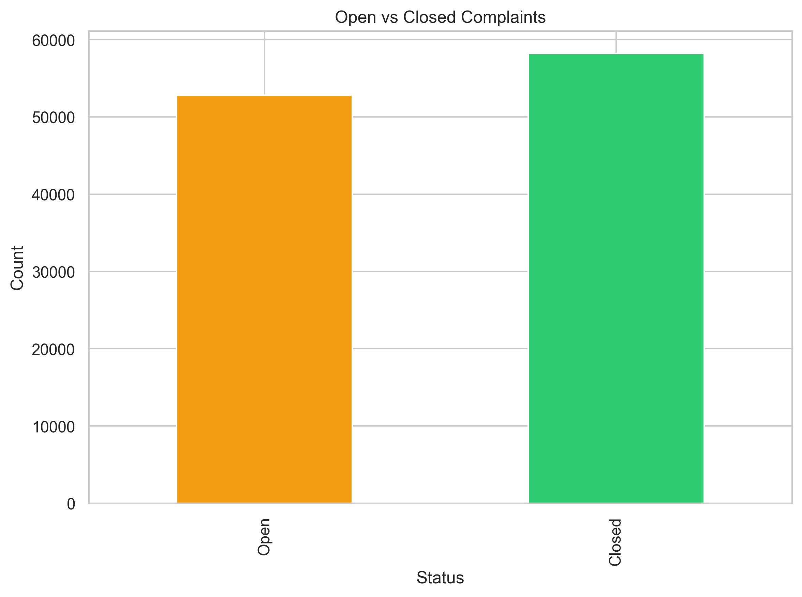

Data audit
Review missing values, duplicate records, invalid date ranges, and weak columns that should be filtered or transformed.
A data analysis project that explores complaint demand, workload concentration, borough-level patterns, and resolution behavior using NYC 311 service request data.

This analysis focuses on understanding how service demand is distributed across complaint types, agencies, boroughs, and time periods, while also checking the data quality issues common in public service records.
Review missing values, duplicate records, invalid date ranges, and weak columns that should be filtered or transformed.
Create time-aware fields such as month, weekday, and resolution duration to expose operational patterns.
Translate technical findings into meaningful operational questions and city service recommendations.
The charts below summarize key patterns found in the data and help communicate the story clearly to a technical or business audience.




The notebook is organized as a clean reporting workflow: audit, clean, engineer features, analyze patterns, and summarize recommendations.
Inspect nulls, inconsistencies, date validity, and low-value columns before modeling or storytelling.
Filter invalid rows, handle open cases, and transform messy fields into a reliable analysis dataset.
Analyze trends across time, borough, complaint type, and agency to find the clearest insights.